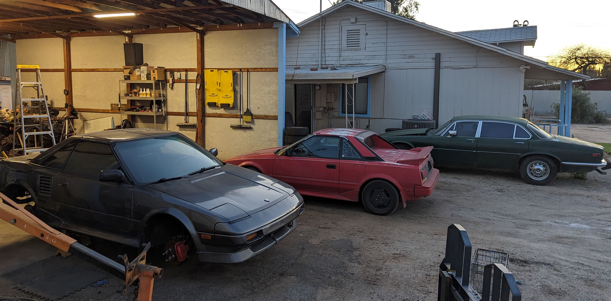

About
Sebring Automotive is both a performance shop as well as your regular mechanic. Bring your car to us for anything from adding a turbo or swapping an engine to simply getting your oil changed or AC recharged. We take pride in our work and enjoy our skilled craft, so you know when you hand over your keys we will treat your car as if it is our own.
Find Us
SHOP HOURS
Monday-Friday 10am-2pm
Closed Saturday and Sunday
Phone Number (520) 276-0436
Address: 861 W. Thurber St.